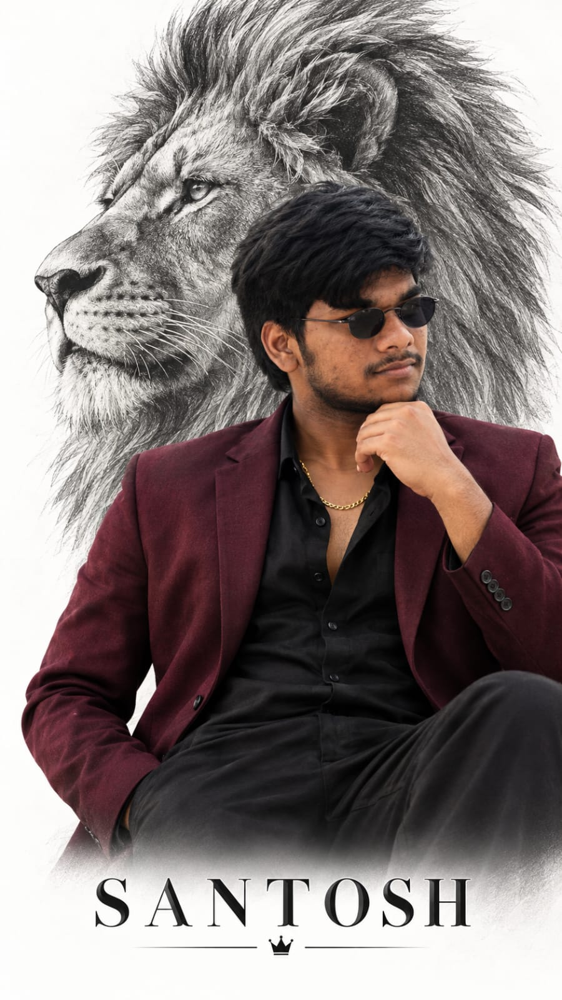

Create an ultra-realistic luxury portrait of a stylish South Indian man(Refrence image given preseve face and facial structure), Fully black hair, a full groomed beard and moustache, and a serious side-profile look. He is wearing a dark burgundy/maroon blazer over a black shirt with the top buttons open, a gold chain around his neck, and black trousers & small rounded sunglasses. His right hand is resting near his beard/chin in a thoughtful pose. Keep the same body posture, clothing, hairstyle, facial hair, composition, and camera angle as the reference.
Behind him, add a large detailed black-and-white pencil-sketch illustration of a majestic lion’s head, facing left, creating a powerful lion-and-man composition. Use a clean white background, soft natural lighting, realistic skin and fabric textures, premium fashion editorial style, sharp details, high resolution, 9:16 vertical composition,Add text of SANTOSH at bottom.